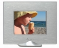

无忌
器材库
全部器材
产品年表
名词百科
榜单
器材库
> 数码相框 > Moderna Mini

Ality
Moderna Mini
分类
数码相框
点评
0 条
图片
0 张
评测
0 篇
Moderna Mini采用3.5英寸大小的液晶屏，分辨率为320 x 240，兼容多种存储卡格式，5颗按键操作。
产品类型
数码相框
综合评分
暂无评分
无忌评测
暂无评测
规格参数
网友点评
(0)
产品图 / 样片
(0)
评测文章
(0)
基本规格
发布日期
未知
厂家推荐价格
39.99 （美元）
液晶屏
液晶屏尺寸
3.5英寸
液晶屏分辨率
320×240
显示比例
4:3
支持图像文件
图像格式
JPEG, BMP
存储
可扩展内存
MMC, MS/MS PRO记忆棒, SD/SDHC, xD
接口、插槽
卡插槽
SD/MMC/XD/MS x 1
外观
颜色
银色
尺寸
1220 x 100 x 23.9mm
该产品暂无存档的网友点评
该产品暂无存档的产品图
评测 / 相关文章
该产品暂无存档的评测文章